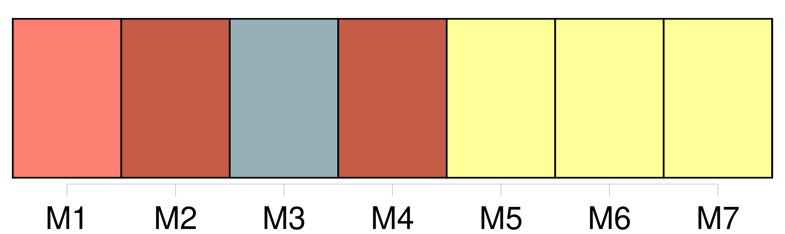
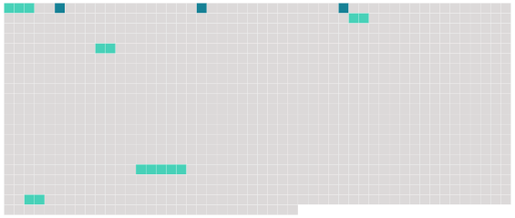

Longueur nb maillons : 8 mentions |
  |
[Un maigre feu] léchait de [ses] langues jaunes la plaque de la cheminée, et de temps en temps [atteignait] le fond d'un coquemar de fonte pendu à la crémaillère, et [sa] faible réverbération allait piquer dans l'ombre une paillette rougeâtre au bord des deux ou trois casseroles attachées au mur. Le jour qui tombait par le large tuyau montant jusqu'au toit, sans faire de coude, s'assoupissait sur les cendres en teintes bleuâtres et faisait paraître [le feu] plus pâle, en sorte que dans cet âtre froid la flamme même semblait gelée. [2 phrases] Un vieux chat noir, maigre, pelé comme un manchon hors d'usage et dont le poil tombé laissait voir par places la peau bleuâtre, était assis sur son derrière aussi près [du feu] que cela était possible sans se griller les moustaches, et fixait sur la marmite ses prunelles vertes traversées d'une pupille en forme d'I avec un air de surveillance intéressée. [9 phrases] Pierre, c'était le nom du vieux serviteur, prit une poignée de bourrées, la jeta sur [le feu à demi mort] ; les brindilles craquèrent et se tordirent, et bientôt la flamme, poussant un flot de fumée, se dégagea vive et claire au milieu d'une joyeuse mousqueterie d'étincelles. [3 phrases] Le reflet [du feu] éclairait sa figure, que les années, le soleil, le grand air et les intempéries des saisons avaient boucanée pour ainsi dire et rendue plus foncée que celle d'un Indien caraïbe ; quelques mèches de cheveux blancs, s'échappant de son béret bleu et plaquées sur les tempes, faisaient encore ressortir les tons de brique de son teint basané ; des sourcils noirs contrastaient avec sa chevelure de neige. |
 |
La ressource peut être téléchargée sur la page Ortolang
Si vous avez des questions ou vous voyez des erreurs, merci d'envoyer un mail à silvia.federzoni89@gmail.com
Site développé par S. Federzoni (contact)